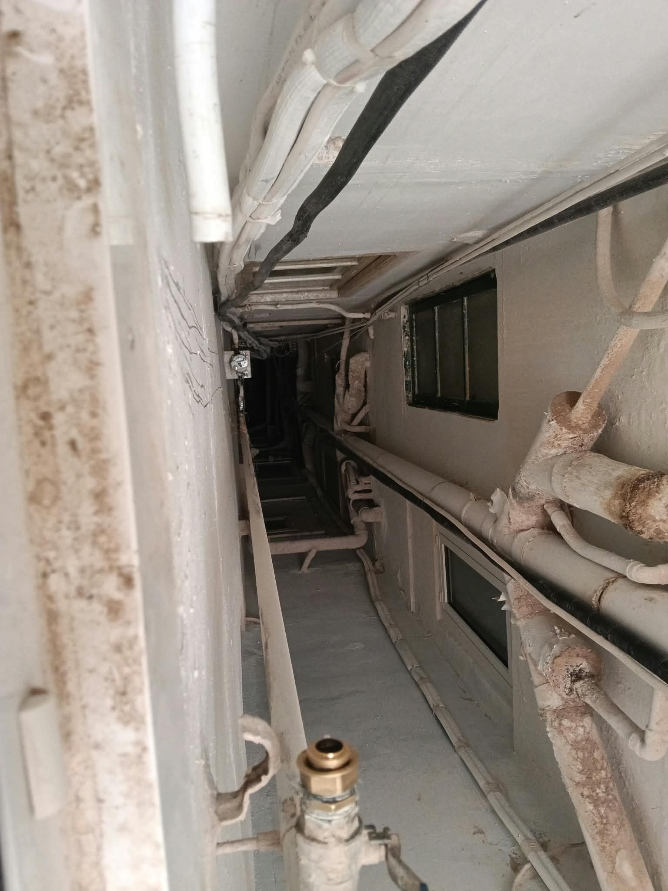

Servicios de Fontanería Urgente y Mantenimiento en Valencia
Furgoneta taller equipada con repuestos multimarca de tubería PPR, multicapa, cobre, grifería, mecanismos de cisterna y termos eléctricos para resolver tu avería en la primera visita.
🚰 Fugas de Agua y Tuberías Rotas 24h
Localización y reparación urgente de fugas visibles u ocultas en tuberías de PPR por termofusión, cobre, polietileno y multicapa en cocinas, baños, techos y montantes comunitarias.
🌀 Desatascos Urgentes sin Obra
Desatasco inmediato de fregaderos, inodoros WC, platos de ducha, bañeras, botes sifónicos, arquetas y bajantes generales con maquinaria profesional sin dañar tus tuberías.
🔥 Termos Eléctricos y Calentadores
Reparación de fugas, resistencias, termostatos y válvulas de sobrepresión, o sustitución e instalación en el mismo día de termos eléctricos verticales y horizontales.
🚽 Cisternas WC, Grifería y Llaves de Corte
Sustitución de descargadores y flotadores de cisterna, llaves de escuadra, latiguillos inoxidables, grifos monomando de cocina/ducha y llaves de paso general o contadores.
💧 Humedades, Filtraciones y Goteras
Diagnóstico del origen exacto de filtraciones entre vecinos, juntas de desagüe, sifones de plato de ducha o colectores, con informe y factura detallada para el seguro del hogar.
🏢 Comunidades, Locales y Hostelería
Servicio urgente y preventivo para comunidades de propietarios, administradores de fincas, restaurantes y comercios en Valencia: grupos de presión, contadores y bajantes de PVC.
Tarifas Oficiales Transparentes · Sin Sorpresas
Te confirmamos siempre el importe por teléfono o WhatsApp antes de desplazar al fontanero
| Franja Horaria de Atención | Horario | Tarifa Base (+ IVA) |
|---|---|---|
| Horario Laborable Diurno (Desplazamiento + 1ª hora mano de obra) | Lunes a Viernes · 08:00 a 20:00 h | 95,00 € + IVA |
| Urgencia Tarde / Noche (Llegada prioritaria < 25 min) | Lunes a Viernes · 20:00 a 00:00 h | 145,00 € + IVA |
| Urgencia Madrugada y Sábados (Guardia 24h) | 00:00 a 08:00 h y Sábados completos | 180,00 € + IVA |
| Urgencia Domingos y Festivos Oficiales | Domingos y Festivos · 00:00 a 24:00 h | 210,00 € + IVA |
| Visita y Diagnóstico sin Reparación (Se descuenta 100 % si se repara) | Horario laborable en Valencia capital | 45,00 € + IVA |
Trabajos Reales de Fontanería en Valencia
Intervenciones verificadas de nuestro equipo técnico en viviendas, comunidades y locales de Valencia.




Zonas de Atención Rápida en Valencia y Área Metropolitana
Salimos directamente desde Av. de l'Oest, 25 (Ciutat Vella, 46001 València) para cubrir todos los barrios de Valencia capital y poblaciones de l'Horta en menos de 25–30 minutos.
Preguntas Frecuentes sobre Fontanería Urgente 24 Horas
¿Cuánto tarda en llegar un fontanero de urgencia en Valencia?
Al estar situados en pleno centro de Valencia (Av. de l'Oest, 25, Ciutat Vella), llegamos en 20 a 25 minutos a cualquier distrito de Valencia capital y en 25 a 35 minutos a municipios del área metropolitana.
¿Me dais el precio por teléfono antes de que vaya el técnico?
Sí, siempre. Antes de desplazar al fontanero te informamos de la tarifa exacta según la franja horaria (desde 95,00 € + IVA en horario laborable diurno) para que tengas total tranquilidad y cero sorpresas.
¿Entregáis factura válida para el seguro del hogar?
Sí. Emitimos informe de intervención detallado con causa de la avería, fotografías si las solicita el perito y factura oficial desglosada para que tu seguro de hogar te reembolse la reparación urgente.
¿Qué métodos de pago aceptáis?
Aceptamos pago con tarjeta, Bizum, transferencia inmediata y efectivo al finalizar y comprobar contigo que la reparación queda totalmente estanca y verificada.